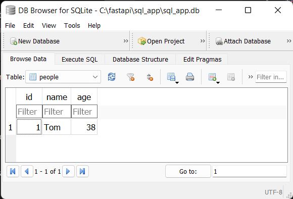
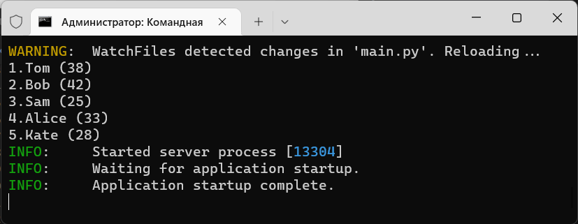

Для взаимодействия с базой данных необходимо создать сессию базы данных, которая представляет объект sqlalchemy.orm.Session. Через этот объект идет вся работа с БД. Но для этого вначале надо создать класс-построитель Session с помощью функции-фабрики sessionmaker()
from sqlalchemy.orm import sessionmaker SessionLocal = sessionmaker(autoflush=False, bind=engine)
эта функция принимает ряд параметров, в частности, здесь применяется два параметра
autoflush: при значении True (значение по умолчанию) будет автоматически вызываться метод Session.flush(), который записывает все изменения в базу данных
bind: привязывает сессию бд к определенному движку, который применяется для установки подключения
Результатом функции является класс SessionLocal. После этого можно создать объект этого класса и через него взаимодействовать в бд:
from sqlalchemy.orm import sessionmaker SessionLocal = sessionmaker(autoflush=False, bind=engine) db = SessionLocal()
Здесь db как раз представляет объект Session.
Рассмотрим простейшие операции CRUD (Create-Read-Update-Delete).
Для добавления в базу данных необходимо сначала создать объект модели, который передается в метод add() объекта Session. После добавления для подтверждения изменений у объекта Session вызывается метод commit()
# создаем объект Person для добавления в бд tom = Person(name="Tom", age=38) db.add(tom) # добавляем в бд db.commit() # сохраняем изменения
Например, определим файле приложения следующий код:
from sqlalchemy import create_engine
from sqlalchemy.orm import DeclarativeBase
from sqlalchemy.orm import sessionmaker, Session
from sqlalchemy import Column, Integer, String
from fastapi import FastAPI
SQLALCHEMY_DATABASE_URL = "sqlite:///./sql_app.db"
engine = create_engine(SQLALCHEMY_DATABASE_URL, connect_args={"check_same_thread": False})
# создаем модель, объекты которой будут храниться в бд
class Base(DeclarativeBase): pass
class Person(Base):
__tablename__ = "people"
id = Column(Integer, primary_key=True, index=True)
name = Column(String)
age = Column(Integer,)
# создаем таблицы
Base.metadata.create_all(bind=engine)
# создаем сессию подключения к бд
SessionLocal = sessionmaker(autoflush=False, bind=engine)
db = SessionLocal()
# создаем объект Person для добавления в бд
tom = Person(name="Tom", age=38)
db.add(tom) # добавляем в бд
db.commit() # сохраняем изменения
print(tom.id) # можно получить установленный id
# приложение, которое ничего не делает
app = FastAPI()
В данном случае создается объект Person, который добавляется в бд. Если после этого мы откроем бд, то сможем увидеть добавленный объект:

Стоит отметить, что в данным случае в классе Person атрибут id выступает в качестве первичного ключа и генерируется в самой бд при добавлении строки в таблицу. Но после добавления объекта мы можем получить значение данного атрибута:
print(tom.id)
Следует отметить, что после добавления или обновления объекта, если мы хотим использовать этот объект, обращаться к его атрибутами, то желательно, а иногда может быть необходимо, использовать метод refresh(), который обновляет состояние объекта:
# создаем объект Person для добавления в бд tom = Person(name="Tom", age=38) db.add(tom) # добавляем в бд db.commit() # сохраняем изменения db.refresh(tom) # обновляем состояние объекта print(tom.id) # можно получить установленный id
Подобным образом можно добавить несколько объектов:
bob = Person(name="Bob", age=42) sam = Person(name="Sam", age=25) db.add(bob) db.add(sam) db.commit()
Причем метод commit() вызывается только один раз.
Однако есть надо добавить несколько объектов, то проще применить метод add_all(), который добавляет список объектов:
alice = Person(name="Alice", age=33) kate = Person(name="Kate", age=28) db.add_all([alice, kate]) db.commit()
Для получения объектов из базы данных вначале у объекта Session необходимо вызывать метод query() - в него передается тип модели, данные которой необходимо получить:
db.query(Person)
Но данный метод просто создает объект Query - некоторый запрос, который будет выполнен в будущем при непосредственном получении данных. Далее применяя к объекту Query различные методы, мы можем получить непосредственный результат. Например, если надо получить все объекты, применяется метод all():
people = db.query(Person).all()
Метод all возращает список объектов модели. Полный код:
from sqlalchemy import create_engine
from sqlalchemy.orm import DeclarativeBase
from sqlalchemy.orm import sessionmaker
from sqlalchemy import Column, Integer, String
from fastapi import FastAPI
SQLALCHEMY_DATABASE_URL = "sqlite:///./sql_app.db"
engine = create_engine(SQLALCHEMY_DATABASE_URL, connect_args={"check_same_thread": False})
class Base(DeclarativeBase): pass
class Person(Base):
__tablename__ = "people"
id = Column(Integer, primary_key=True, index=True)
name = Column(String)
age = Column(Integer,)
SessionLocal = sessionmaker(autoflush=False, bind=engine)
db = SessionLocal()
# получение всех объектов
people = db.query(Person).all()
for p in people:
print(f"{p.id}.{p.name} ({p.age})")
# приложение, которое ничего не делает
app = FastAPI()

Для получения одного объекта по id применяется метод get() класса Session. В качестве параметров метод получает тип модели и идентификатор объекта, который надо получить. Например, получим один объект Person, у которого id = 1:
# получение одного объекта по id
first_person = db.get(Person, 1)
print(f"{first_person.name} - {first_person.age}")
# Tom - 38
Для фильтрации у объекта Query применяется метод filter(), который принимает условие фильтрации. Например:
people = db.query(Person).filter(Person.age > 30).all()
for p in people:
print(f"{p.id}.{p.name} ({p.age})")
Здесь получаем все объекты Person, у которых значение атрибута age более 30. Метод filter() также возвращает объект Query, поэтому для получения собственно
списка объектов, которые соответствуют фильтру, в конце по цепочке применяется метод all()
Для получения только одного объекта применяется метод first() класса Query:
first = db.query(Person).filter(Person.id==1).first()
print(f"{first.name} ({first.age})")
В данном случае получаем объект Person, у которого id = 1.
Стоит отметить, что методы get() и first() возвращают None, если объект не найден.
Поэтому при получении одиночного объекта желательно проверять его на значение None.
Для обновления объекта достаточно изменить значения его атрибутов и затем вызвать у объекта Session метод commit() для применения изменений:
# получаем один объект, у которого имя - Tom
tom = db.query(Person).filter(Person.id==1).first()
print(f"{tom.id}.{tom.name} ({tom.age})")
# 1.Tom (38)
# изменениям значения
tom.name = "Tomas"
tom.age = 22
db.commit() # сохраняем изменения
# проверяем, что изменения применены в бд - получаем один объект, у которого имя - Tomas
tomas = db.query(Person).filter(Person.id == 1).first()
print(f"{tomas.id}.{tomas.name} ({tomas.age})")
# 1.Tomas (22)
Для удаления у объекта Session применяется метод delete(), в который передается удаляемый объект:
bob = db.query(Person).filter(Person.id==2).first() db.delete(bob) # удаляем объект db.commit() # сохраняем изменения